Page 1 / 原始页码 99
第 6 章 膜
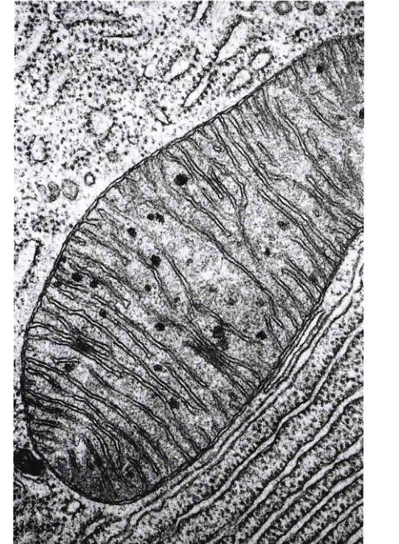
图 6.1 人类细胞内的膜 内质网层在细胞内纵横交错。大的椭圆形物体是一个线粒体，它内部有很多内膜。
细胞最重要的活动是它与环境的相互作用，释放物质与吸收物质从不停止，没有了它，生命将不复存在。活细胞和真核细胞的细胞器（图 6.1）被脂质膜包裹着，很少有水溶性物质能够通过，但膜上存在一些蛋白质通道，允许特定物质进出细胞，并使细胞能与环境进行信息交换。这种镶嵌有蛋白质分子的薄而柔软的脂层称为质膜 (plasma membrane)。本章将讨论这种重要的膜的结构和功能。
Page 2 / 原始页码 100
6.1 生物膜是流动的脂层
6.1.1 磷脂双层
包裹所有活细胞的膜是脂质双分子层结构，10000多层这种脂层叠在一起只相当于一片纸的厚度。构成细胞膜基础的脂质层由一种称为磷脂 (phospholipid) 的分子组成（图 6.2）。
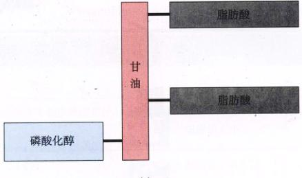
图 6.2 磷脂的结构 (a) 磷脂是与三酰甘油类似的分子，不同的是磷脂只有两个脂肪酸与其甘油主干结合，磷酸化的醇占据了主干的第三个位置；(b) 因为磷酸化的醇经常向一端展开，而两个脂肪酸链则向另一端展开，所以磷脂经常以极性头和两条非极性尾的形态表示。
1) 磷脂
正如在第3章学习的脂肪分子那样，磷脂分子也有一条含3个碳原子的甘油分子主链，与这个主链结合的是脂肪酸，一种以羧基结尾的碳原子长链。一个脂肪分子有3个这样的链，各与主链上的一个碳原子结合。因为这些碳链是非极性的，所以不会与水形成氢键，因此脂肪分子不溶于水。与之对比，一个磷脂分子只有两个脂肪酸链与它的主干结合，主干上第三个碳原子与高度极性的有机醇结合，这个极性分子可以和水迅速地形成氢键。因为这个有机醇靠磷酸基团与主链结合，所以整个分子称为磷脂。
这样，磷脂分子的一端有很强的非极性（水不溶），而另一端则有很强的极性（水溶性）。两个非极性的脂肪酸大致平行，向一个方向伸出，而极性的醇基则朝向另一个方向。因为这种结构，所以磷脂经常以一个极性头和两个非极性尾来表示（图 6.2b）。
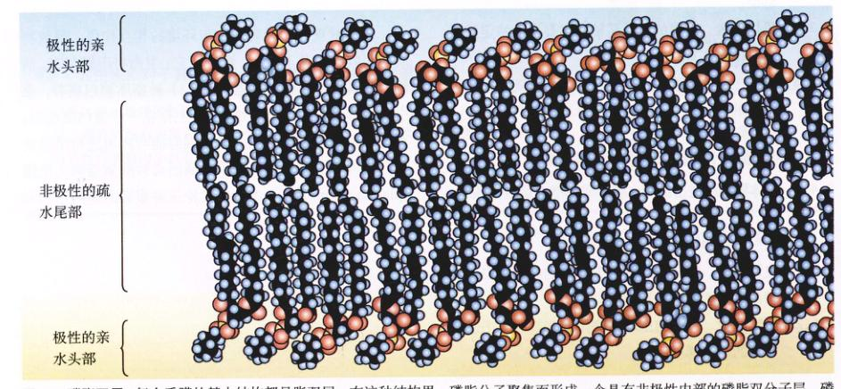
图 6.3 磷脂双层 每个质膜的基本结构都是脂双层。在这种结构里，磷脂分子聚集而形成一个具有非极性内部的磷脂双分子层。磷脂的尾部并不是完美排列的，故膜具有流动性。单个的磷脂分子可从膜的一处移动到另一处。
Page 3 / 原始页码 101
2) 磷脂形成双层
当磷脂分子放入水中时，会出现什么情况呢？极性的水分子为了寻找伙伴形成氢键，所以把磷脂非极性的长尾巴排斥开。由于水的极性，磷脂的非极性尾端将聚在一起，且尽可能远离水。每个磷脂分子的极性头都朝向水，非极性尾巴对尾巴面对面形成两层时，没有尾巴与水接触，这种结构称为脂双层 (lipid bilayer)（图 6.3）。在水分子极力形成最多氢键的趋势下，脂双层能够自动形成。
脂双层内部的非极性阻碍了水溶性物质的穿透，就像一层油阻碍水滴通过那样（“水和油不能混合”）。阻碍水溶性物质通过是脂双层的关键生物性质。除了构成脂双层的磷脂外，每个细胞的膜上还含有穿透脂双层的蛋白质，提供了跨膜的通道。
6.2 镶嵌在质膜上的蛋白质决定了膜的特性
6.2.1 流动镶嵌模型
质膜是由脂和球蛋白组成的。曾经很多年，生物学家们认为蛋白质覆盖在磷脂双层的内外表面，就像一层涂料一样。被广泛接受的是 Davson-Danielli 在 1935 年提出的模型，该模型描绘成像是三明治：磷脂双层夹在两层蛋白中间。然而这个模型与 20 世纪 60 年代对膜蛋白的研究结果并不一致——与细胞内其他大多数蛋白质不一样，膜蛋白在水中的溶解度不大，它们有长的一段非极性疏水氨基酸，如果这样的蛋白确实如 Davson-Danielli 的模型所说的那样覆盖在脂双层表面，那它们非极性部分将把磷脂的极性部分与水分离开，使膜分崩离析！这种情况并未发生，所以这种模型显然一定有什么地方错了。
1972年，S. Singer 和 G. Nicolson 对这个模型做了一个简单而意义深远的修改：他们认为球蛋白是插在脂双层里的，球蛋白的非极性部分与脂双层内的非极性内部接触，而它们的极性部分突出膜的表面，这个模型称为流动镶嵌模型 (fluid mosaic model)。镶嵌的蛋白质就像小船在池塘上那样在流动的脂双层上漂浮（图 6.5）。
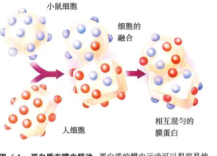
图 6.4 蛋白质在膜内移动 蛋白质的膜内运动可以很容易地由这样一个实验所证实：由荧光标记膜蛋白的鼠细胞和人细胞融合。开始时，所有鼠的蛋白质都在融合细胞的鼠细胞部分，而人的蛋白质也都在人细胞部分。然而在一个小时内，标记蛋白和未标记蛋白已经完全在这个杂种细胞膜上混匀了。
的位置关系，因此，单独的磷脂分子和未固定的蛋白质可以在膜内自由移动。融合细胞蛋白质的重新分配试验可以十分直观地证明这一点（图 6.4）。
磷脂双层是流动的，具有类似橄榄油的黏性（像油一样，脂双层的黏性随温度下降而增加），而且某些膜具有相对很强的流动性。当每个磷脂分子的尾巴排列得很紧密时，它们便会互相吸引，这种相互作用会降低膜的流动性，因为分子在膜上运动时必须先克服这种力，这种紧密排列的程度越强，膜的流动性越差。一些磷脂的尾巴里含有碳碳双键，所以会出现扭曲，也就使尾巴不能紧密排列了，含有这种磷脂的膜要比不含这种磷脂的膜更具有流动性。大多数膜还含有胆固醇等类固醇，这类脂可以增加或降低膜的流动性，这取决于温度。
Page 4 / 原始页码 102
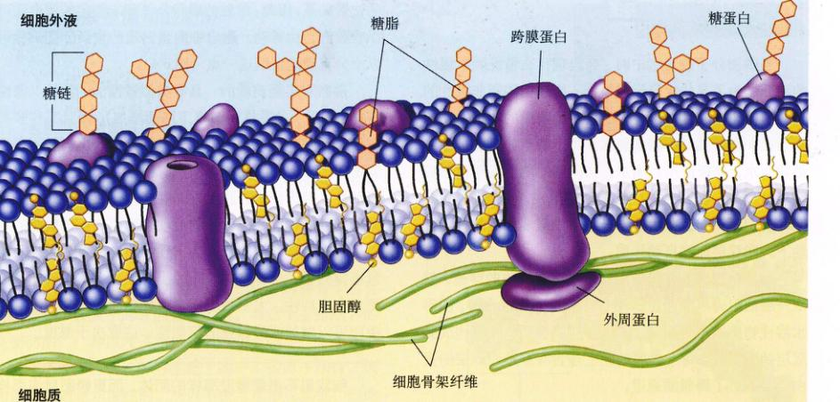
图 6.5 质膜的流动镶嵌模型 各种蛋白质从动物细胞质膜里穿透出来，它们非极性的部分固定在膜的非极性内部。3种主要的膜蛋白是：运输蛋白、受体和细胞表面标记。糖链经常与这些蛋白质的细胞外部分结合，同时也和膜的磷脂结合。这些糖链作为细胞的识别标签，每个指定的细胞都有惟一的标记。
细胞膜的成分
一个真核细胞有很多膜，虽然它们不尽相同，但有着相同的基本构造。细胞膜是由以下四个成分组装而成（表 6.1）：
表 6.1 细胞膜的成分
| 成 分 |
构 成 |
功 能 |
如何工作 |
示 例 |
| 磷脂双层 |
磷脂分子 |
提供渗透的屏障和供蛋白质结合的基质。 |
从脂双层的非极性内部排出水溶性分子 |
细胞膜的脂双层对水溶性物质，如糖，是非渗透性的。 |
| 跨膜蛋白 |
载体 |
主动或被动地跨膜运输分子。 |
通过一些构象变化护送分子穿过膜。 |
运输糖的血型糖蛋白载体；钠、钾泵 |
|
通道 |
被动地跨膜运输分子 |
产生一条隧道作为穿过膜的通道。 |
神经细胞的钠、钾通道 |
|
受体 |
把信息传到细胞内 |
信号分子与受体蛋白的细胞表面部分结合，改变受体蛋白的胞内部分，从而引发反应。 |
多肽激素和神经递质结合的受体 |
| 内部蛋白的网络 |
血影蛋白 |
决定细胞的形状 |
在膜的下面形成支架，固定在膜和细胞骨架上。 |
红细胞 |
|
网格蛋白 |
把某些蛋白质固定在指定的地方，尤其是在受体介导的胞吞作用中的细胞膜外面。 |
蛋白质处在膜表面的有被小窝处，与特定分子结合。 |
低密度脂蛋白受体在有被小窝内定位 |
| 细胞表面的标记 |
糖蛋白 |
自我识别 |
建立一个有自身特点的蛋白质 / 糖链的形状。 |
由免疫系统识别的主要组织相容性抗原复合物 |
|
糖脂 |
组织识别 |
建立一个组织特异的脂 / 糖链的形状。 |
ABO 血型系统的标记物 |
Page 5 / 原始页码 103
(1) 脂双层：每个细胞膜都由一个磷脂双层组成。膜的其他成分都镶嵌在磷脂双层里，脂双层提供了弹性基质，还具有阻止物质渗透的功能。
(2) 跨膜蛋白：膜的一个主要成分是一类漂浮在脂双层上面或里面的蛋白质，这些蛋白质提供了物质和信息穿过膜的通道。很多膜蛋白都不是固定在某个位置的，它们和磷脂分子一样可以移动。一些膜上挤满了蛋白质，而另一些膜上的蛋白质分布得很稀疏。
(3) 支持纤维网络：膜靠一种胞内蛋白来起到结构上的支持作用，保持形状。例如，红细胞之所以能保持两面内凹的形状，是因为一种称为血影蛋白 (spectrin) 的支架蛋白，将质膜上的蛋白质与细胞骨架中的肌动蛋白丝相连接而造成的。膜利用其他蛋白网络，来控制某些重要膜蛋白的侧面运动，并将它们固定在特定位置。
(4) 外部蛋白和糖脂：膜的片段是在内质网里组装，然后转移到高尔基体，再运输到质膜。内质网在膜蛋白和膜脂上加上糖链，形成一层“糖衣”，称为糖萼 (glycocalyx)，糖萼只伸向细胞外面。不同类型细胞表面的糖蛋白与糖脂，这起到了标记细胞的作用。
6.2.2 观察细胞膜
生物学家用放大几千倍的电子显微镜观察薄而精巧的膜结构。我们在第5章讨论过两种电子显微镜：透射电子显微镜 (TEM) 和扫描电子显微镜 (SEM)。在用电子显微镜观察细胞膜前，先要把膜做成适于观察的样品。
制作样品的方法之一是先将选取的组织包埋在硬的基质里，常用的基质是环氧树脂（图 6.6）。环氧树脂的包埋块再用切片机切成薄片。切片机是一种锋利薄刃刀，可以切出非常的薄的切片。在样品向前移动的同时，刀片上下运动，把样品切成厚度不到 1 μm 的透明环“氧基树脂薄片”。把这些薄片放在载网上，TEM 发出的电子束穿过载网，通过高倍电子显微镜，我们可以很容易观察到膜的双层结构。
冷冻断裂法是另一个显示膜内部结构的方法。把组织埋在介质中，然后用液氮快速冷冻，再用刀“拍”冷冻的组织，造成膜磷脂双层的一个裂缝，蛋白质、糖类、凹陷处、孔、通道和所有与膜相关的结构都将被拉开（通常是全部）并粘在被劈开膜的一面。一层非常薄的铂被蒸发到切口表面，形成表面的一个复型膜或称铸模，这样一来，膜的三维图像就保留在这个铸模上。当真正的组织消化掉后，用电子显微镜观察铸模，可以看到一个很不同的膜图像。
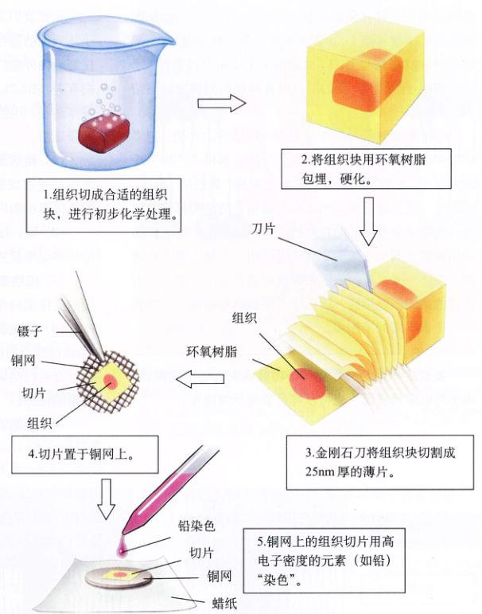
图 6.6 用于观察膜结构的电子显微镜超薄切片的准备过程
1. 将组织切成合适的组织块，进行初步化学处理。 -> 2. 将组织块用环氧树脂包埋，硬化。 -> 3. 金刚石刀将组织块切削成 25nm 厚的薄片。 -> 4. 切片置于铜网上。 -> 5. 铜网上的组织切片用高原子密度的元素（如铅）“染色”。 -> 6. 透射电镜 (TEM) 下用电子束照射标本。 -> 7. 高分辨率的 TEM 可以观察组织和细胞的精细结构。
Page 6 / 原始页码 104
6.2.3 膜蛋白的种类
正如我们所知道的，质膜是由镶嵌在流动的磷脂分子阵列上的蛋白质组成的复合体，这种富有弹性的结构使细胞内外能广泛地相互作用，某些作用还直接与膜蛋白有关（图 6.7）。虽然细胞膜与环境相互作用有很多途径，但是在这里和第7章只着重讨论以下6种重要的膜蛋白。
(1) 转运蛋白：膜有很强的选择性，只允许特定物质借助通道或载体进入或者离开细胞。在一些情况下，膜会摄取细胞内已有的高浓度分子。
(2) 酶：细胞在质膜的内表面利用附在膜上的酶发生很多化学反应。
(3) 细胞表面受体：膜对化学信息非常敏感，细胞表面的受体蛋白作为“天线”接收这些消息。
(4) 细胞表面的识别标记：膜上带有细胞表面的标记，通过这些标记与其他细胞相区别。大部分种类的细胞都带有特异的识别标签，这种特异性结合是区分各各组织类型的根据。
(5) 细胞的黏附蛋白：细胞利用特定的蛋白质来互相黏附在一起。一些黏附蛋白就像维可牢 (Vecro)（尼龙搭扣的商标名。校者注）那样起作用，而另一些形成更持久的黏合。
(6) 细胞骨架的附着物：与其他细胞相互作用的表面蛋白，常常由连接蛋白锚定在细胞骨架上。
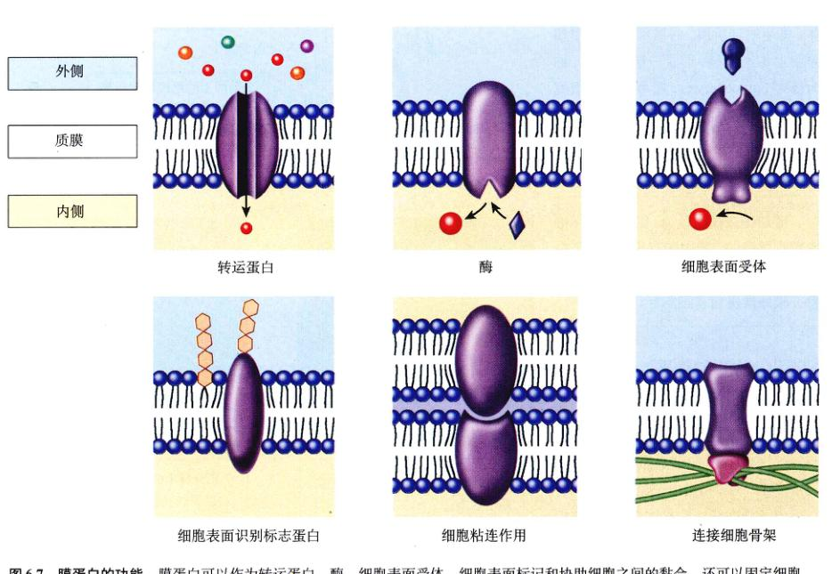
图 6.7 膜蛋白的功能 膜蛋白可以作为转运蛋白、酶、细胞表面受体、细胞表面标记和协助细胞之间的黏合，还可以固定细胞骨架。
Page 7 / 原始页码 105
6.2.4 膜蛋白的结构
如果膜蛋白真的像海上的船那样浮在脂双层上，那么它们是怎样跨膜形成通道的呢？而某些特殊蛋白又是如何固定在细胞膜的特定位置呢？
1) 脂双层里的锚定蛋白质
很多膜蛋白都通过特殊的分子黏附在膜表面上，这些分子与磷脂结合，从而把蛋白质固定在膜上。如同船系在一个浮动的船坞上，这些蛋白质可以系着一个磷脂分子在膜表面自由移动。
相对地，其他的蛋白质会穿过脂双层。蛋白穿透脂双层的部分，由一个或数个非极性的螺旋，或者非极性氨基酸形成的数个 β-折叠组成（图 6.8），它们与脂双层的非极性内部接触。因为水会像避开非极性的脂链那样避开非极性的氨基酸，所以蛋白质的非极性部分会与脂双层的内部结合。虽然蛋白质的极性端会从膜的两端伸出来，但是蛋白质会产生非极性片段而被固定在膜里。蛋白质任何出膜的运动，都使其非极性的区域与水接触，结果，蛋白质又被挤回膜的内部。
2) 穿过脂双层的蛋白质
细胞含有多种跨膜蛋白 (transmembrane protein)，它们因其功能的不同而使穿透脂双层的方式有差异。
(1) 锚蛋白：一段单独的非极性片段足以把蛋白固定在膜里，这种固定蛋白质的方式把细胞骨架的血影蛋白网络与质膜内表面黏在一起（图 6.9）。很多作为胞外信息受体的蛋白质都是这种“单次通过”的锚，它们只跨膜一次。当细胞遇到激素或其他一些分子时受体突山细胞表面的部分，会与它们结合，这种结合会导致受体蛋白的另一端，即胞内部分的变化。我们将会在第7章对细胞信号传递的机制所作详细介绍。
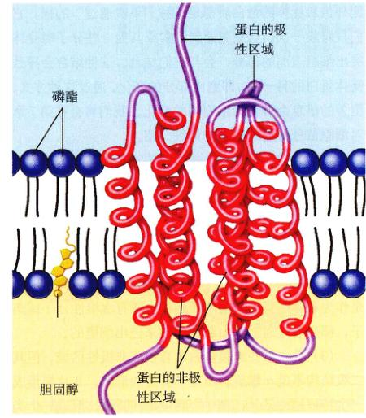
图 6.8 蛋白质的非极性区域是如何固定在膜里的 一个非极性氨基酸螺旋（红色）穿透脂双层的非极性内部，而极性部分（紫色）从脂双层中伸出来。蛋白质不能移动进或移出，是因为这样的移动会使蛋白质的非极性片段与水接触。
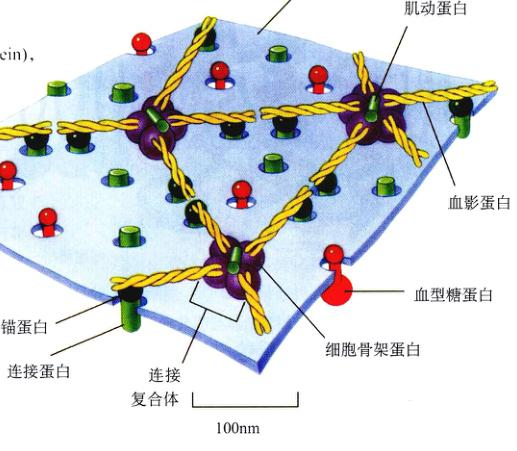
图 6.9 固定蛋白质 血影蛋白延展成网状结构，并固定在红细胞质膜的细胞质一面。以拧在一起的二聚物形式表示的血影蛋白，通过衔接点复合物和锚蛋白等特殊的蛋白质黏附在膜上。血型糖蛋白也与这种黏附作用有关。这个骨架蛋白网络使红细胞等细胞具有弹性。
Page 8 / 原始页码 106
(2) 通道和载体：一些蛋白质有几个螺旋片段来回跨膜，这样会形成一个类似多纳圈上的孔那样的通道。例如，细菌用来进行光合作用的视紫红质是一种主要的跨膜蛋白质，它含有7个跨膜的非极性 α 螺旋片段，它们形成了一个圆形的孔，光能驱动的质子泵帮助下供质子通过（图 6.10）。另一些跨膜蛋白质不形成通道，而是作为载体进行物质的跨膜运输。所有水溶性分子或离子，都是通过通道或由载体运输来进出细胞的。
(3) 孔：某些跨膜蛋白质有各类非极性区域，但其二级结构不是 α 螺旋，而是 β 折叠的形式。β 片层形成一个特征结构基元：在一个圈里来回折叠，形成一个类似桶的木板组合。这种所谓的“β-折叠桶”结构的另一端都是开放的，这种特征蛋白在某些细菌的外膜比较常见，属于膜孔蛋白 (图 6.11)。
6.3 被动运输是顺着浓度梯度进行的跨膜运输
6.3.1 扩散
溶于水的分子和离子不断地进行随机运动，这种随机运动导致一种从高浓度区到低浓度区的净移动，这种过程称为扩散 (diffusion)（图 6.12）。由扩散导致的净移动将不断进行，一直到所有区域的浓度都相同为止。可通过以下试验来证实扩散的存在：用墨水充满一个广口瓶，盖上瓶盖，把它放在一桶水的底部，然后小心移开瓶盖，墨水分子将慢慢地从广口瓶里扩散到外面，直到桶和广口瓶里的浓度一样为止。分子浓度的均一也是一种平衡。
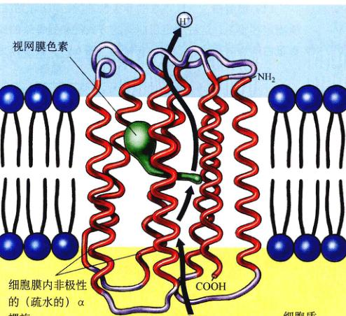
图 6.10 通道蛋白质 这个跨膜蛋白参与了盐杆菌 (Halobacterium halobium) 的光合作用。蛋白质跨膜7次，它的疏水螺旋片段处在脂双层的疏水区域里。这些螺旋片段形成一个穿过脂双层的通道，视网膜色素（绿色）就可以通过这个通道来抽吸质子。
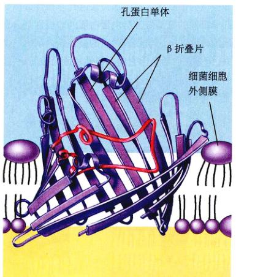
图 6.11 膜孔蛋白 细菌的跨膜蛋白孔蛋白，形成一个大的开放通道，它处在细菌的外膜上，称为膜孔。16条 β 折叠片相互反向排列，在细菌的细胞外膜上形成一个 β 桶形结构。这个通道允许水和其他物质通过膜。
Page 9 / 原始页码 107
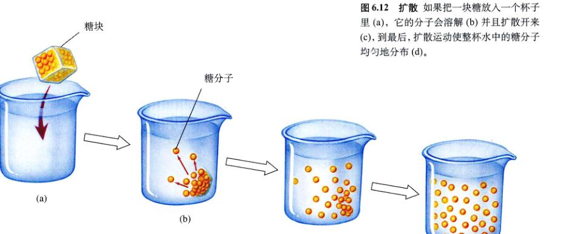
图 6.12 扩散 如果把一块糖放入一个杯子里 (a)，它的分子会溶解 (b) 并且扩散开来 (c)，到最后，扩散运动使整杯水中的糖分子均匀地分布 (d)。
1) 易化运输是有选择性的
细胞所需要的分子很多是极性的，它们不能通过磷脂双层的非极性内部，这些分子通过质膜里一些特殊的通道进入细胞。通道的内部是极性的，因此对这些极性分子很“友好”，这有助于它们穿过膜。每种通道通过膜的生物分子，都有各自的转运蛋白（也就是说，通道有使用的），每种通道都有相对应的一种分子，因此称为选择性渗透 (selectively permeable)，因为只有通道允许的分子才能进入。细胞的质膜有很多不同类型的通道，不同的通道对不同的分子具有选择性。
2) 经过通道的离子扩散
经通道扩散是物质跨膜扩散的最简单方法之一，离子就是这样穿过膜的。离子是含有不等量质子和电子的溶解物（溶于水的物质）。含有过量质子而带净正电荷的离子称为阳离子 (cation)，含有过量电子而带净负电荷的离子称为阴离子 (anion)。因为它们带电荷，所以可以很好地与像水这样的极性分子相互作用，而被磷脂双层的非极性内部排斥，因此，如果没有膜的转运蛋白协助，离子是不能在细胞质与细胞外液之间转移的。离子通道 (ion channel) 的跨膜区具有一个亲水的内部，离子可以不与膜内磷脂的疏水尾巴接触，而借由通道进行扩散，而且离子既不会粘在通道蛋白上，也不会与其有相互作用。决定离子净移动方向的两个因素是：膜两边的相对浓度和跨膜电压（第54章将对此作讨论）。每种通道对应着一种特定的离子，如钙离子 (Ca²⁺) 或氯离子 (Cl⁻)，在某些特性下，一种通道可以对几种离子，离子通道在神经系统的信号传导中起着主要的作用。
6.3.2 易化扩散
载体 (carrier) 是另一种膜蛋白，它不但运送离子，还运送糖和氨基酸等其他溶解物，带它们穿过膜。和通道蛋白一样，载体对某一种类型的溶解物有特异性，也可以在两个方向上运送物质穿过膜。然而与通道不同的是，它们通过与分子的物理结合而加速了溶解物穿过膜的速度，它们在膜的一边与分子结合，而在另一边把分子释放出来。同样的，溶解物的净移动方向是由膜两边的浓度梯度决定的，如果细胞质内的浓度较高，那么溶解物更易于在细胞质一侧与载体结合，然后在细胞外的一边释放出来，这将导致由内到外的一个净移动。如果细胞外的浓度更高，净运动将由外向里。因此，净移动总是从高浓度指向低浓度的，这和简单扩散是一样的，只是载体加速了这个过程。所以，这种运输机制有时也称为易化扩散 (facilitated diffusion)（图 6.13）。
1) 红细胞里的易化扩散
几个由载体蛋白参与易化扩散的例子，可以在脊椎动物的红细胞 (RBCs) 膜上找到。例如，一个 RBC 载体蛋白，在两个方向上会各运送一种不同的分子：在一个方向上运送 Cl⁻，而在反方向运送碳酸氢根离子 (HCO₃⁻)。你将在会第52章看到，这种载体对血液运输二氧化碳很重要。
Page 10 / 原始页码 108
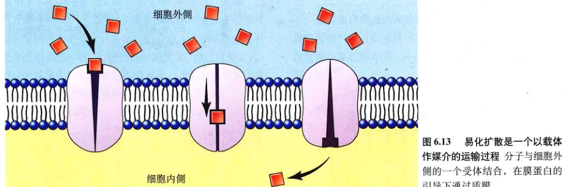
图 6.13 易化扩散是一个以载体作媒介的运输过程 分子与细胞外侧的一个受体结合，在膜蛋白的引导下通过质膜。
红细胞膜上另一种重要的易化扩散的载体是葡萄糖转运蛋白。红细胞采用下面的化学方法来维持胞内的葡萄糖浓度处于较低的水平。当葡萄糖分子进入细胞后，细胞立即给葡萄糖加上磷酸基团，把它变成高度带电的磷酸化葡萄糖，这种葡萄糖不能再通过膜回到细胞外，这就维持了葡萄糖的浓度梯度，有利于其进入细胞内。葡萄糖进入细胞的葡萄糖转运蛋白，并非形成一个通道让葡萄糖通过，而是先与葡萄糖结合，然后改变化，把葡萄糖拉过脂双层，并在质膜内侧把葡萄糖释放。当载体释放了葡萄糖，它将恢复原来的形状，又可以结合细胞外的下一个葡萄糖分子。
2) 载体运输的饱和性
载体运输的一个显著特征是运输速度会达到饱和。换句话说，如果物质浓度的梯度不断增加，那么它的运输速度也将增加到某一点，然后维持这个水平。若继续增加浓度梯度，运输速度也不会增加。这种情况的解释是，膜上的载体数量有限，当被运载的物质的浓度升到足够高时，全部载体都将用于运输，而这个运输系统的容量将达到饱和。与之相反，扩散（通过脂双层的通道扩散，而没有载体的协助）方式跨膜移动的物质，就出会出现速度饱和的情况。
易化扩散为细胞提供了一个可行的方法，来防止一些不需要的分子在细胞内积累，或吸收糖类（此处指单糖。校者注）等在细胞外以高浓度存在的细胞所需物质。易化扩散有以下3个基本特征：①特异性：任何指定的载体只运送一定和分子或离子；②被动性：净移动的方向是由被运输物质在细胞内外的相对浓度决定；③饱和性：如果所有合适的蛋白质载体都在使用，再增加浓度梯度也不会增加运输速度。
6.3.3 渗透
细胞质含有些溶于水的离子和分子，如糖和氨基酸，这些物质与水混合形成的混合物称为水溶液 (aqueous solution)，水是溶液中的主要成分，称为溶剂 (solvent)，被水溶解的物质称为溶质 (solute)。水和溶质能跨膜扩散，产生重要后果。
1) 分子顺着浓度梯度扩散
水和溶质都会从高浓度区域向低浓度区域发生扩散，也就是顺着它们的浓度梯度扩散。当两个区域被膜分开时，发生什么事就要看溶质是否可以自由地穿过膜了，包括离子和糖在内的部分溶质不是脂溶性的，因此无法穿过膜的脂双层。
即使是水分子，因为有很强极性，所以也不能通过脂双层，它是要通过水通道蛋白 (aquaporins) 流动，这是专门供水分子使用的通道。一个简单的实验可以说明这一点：如果你把一个两栖类的卵放在低渗的泉水里，它将不会膨胀；而如果你往卵内注射水通道蛋白的 mRNA，这种通道蛋白就会表达出来，然后卵就会膨胀了。
溶解了的溶质会与水相互作用，水在带电溶质周围形成一个水合外壳。当溶质有一个浓度梯度时，溶质会从高浓度移向低浓度，同时也拉着由水分子形成的水合外壳移动。当一张膜把两个溶液分开时，水合外壳的水分子伴随溶质的离子移动，形成了朝向低浓度溶质一方的净移动，这种通过扩散而进行的跨膜的水的移动称为渗透 (osmosis)（图 6.14）。其实，溶液中的自由水占大部分，高浓度溶液中的自由水相对少，低浓度溶液中的自由水多，所以当溶质无法自由跨膜移动时，水是向溶质浓度高的一侧净移动。校者注）
Page 11 / 原始页码 109
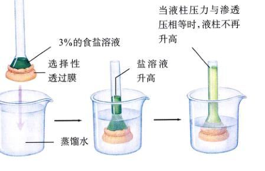
图 6.14 证明渗透作用的一个实验 (a) 管末端充有一种盐溶液，并由选择性渗透膜封闭，这张膜只允许水分子通过，而不允许盐离子通过；(b) 当这根管漫入一杯蒸馏水中，盐不能通过膜，而水分子可以，水进入试管，导致里面的盐溶液的液面上升；(c) 水继续从杯里进入试管，直到试管中水柱的重量所产生的向下的力与将水向上拉的力相等为止。这个力称为渗透压。
溶液里所有溶质的总浓度称为溶液渗透浓度。如果两个溶液的渗透浓度不等，那么较高浓度的溶液是高渗的 (hyperosmotic，希腊语 hyper 是“多于，高于”的意思)，较低浓度的溶液是低渗的 (hypoosmotic，希腊语 hypo 是“低于，少于”的意思)，如果两个溶液的渗透浓度相等，那么溶液称为等渗的 (isosmotic，希腊语 iso 是“相等”的意思)。
在细胞里，质膜把两个水溶液分开，一个在细胞里（细胞质）而另一个在细胞外（细胞外液），水穿过这张膜的净扩散方向，由两边溶液的渗透浓度决定（图 6.15）。举个例子，如果一个细胞的细胞质对于细胞外液来说是低渗的，那么水将朝向较高溶质浓度（也就是较低浓度的非结合水分子）的方向扩散到细胞外去。水从细胞质的这种流失，会导致细胞萎缩，直至细胞质和细胞外液的渗透浓度相等为止。
2) 渗透压
如果细胞质相对于细胞外液是高渗的那会怎么样呢？在这种情况下，水将从细胞外液扩散入细胞内，导致细胞膨胀。细胞质对细胞膜向外的压力，即流体静压，将会增强。另一方面渗透压也在起作用（图 6.16）。渗透压是指用于停止水分子穿过膜的渗透运动的压力。如果膜足够结实，细胞将达到一个平衡状态，在这个状态下，趋向于把水赶入细胞的渗透压，将完全被趋向于把水排出细胞的流体静压力抵消掉。然而，质膜本身所能承受的内压是有限的，一个动物的细胞在这种情况下，将会像一个过量打气的气球那样破裂。因此，维持一个等渗条件对于动物细胞来说是很重要的。相比之下，细菌、植物细胞和真菌还有很多原生生物，都有结实的细胞壁包裹着，这些生物的细胞可承受很高的内压而不至于破裂。
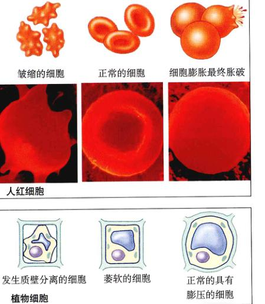
图 6.15 渗透 在一个高渗溶液中，胞内的水流向具有较高溶质浓度的胞外，导致细胞萎缩。在一个等渗溶液中，膜两边的溶质浓度相等。渗透仍在发生，但水扩散进入细胞和离开细胞的速度相等，所以细胞不会改变其大小。在一个低渗溶液中，细胞内的溶质浓度比外面高，所以水将净移入细胞内。
3) 维持渗透平衡
当细胞处于一个低渗的环境中时，生物体怎么反应呢？事实上，生物已经进化出许多方式来解决这一问题。
(1) 挤出 (extrusion)：一些单细胞真核生物（如原生动物草履虫）利用称为伸缩泡的细胞器来除去水。每个伸缩泡从细胞质的不同部分收集水，然后再将水运送到靠近细胞表面伸缩泡的中央部分。收缩泡有一个小孔，朝向细胞外开口，通过有规律的收缩，伸缩泡把水经孔挤出细胞。
Page 12 / 原始页码 110
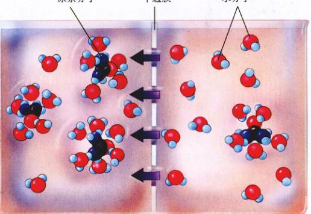
图 6.16 溶质是怎样形成渗透压的 带电或极性的物质可以与包围在它们周围的水分子形成氢键，这就能使它们能溶于水里。当一个极性的物质（在这里是尿素）加在膜一边的溶液里时，在每个尿素分子周围聚集的水分子不能再自由的扩散通过膜，结果极性的溶质减少了在膜这边的自由水分子，从而增加渗透压。因为膜低渗的一边（在右边，含较少溶质）比高渗的一边（在左边，含较多溶质）含有更多没有结合的水分子，水可以通过扩散作用从右边移到左边。
(2) 等渗溶液 (isosmotic solution)：一些生活在海洋的生物，可以调节它们的内部溶质浓度，以达到周围海水相等的浓度，与环境形成等渗，这些细胞将不会有水净流入或净流出。很多陆生生物用相似的方法来解决这个问题，使身体内的体液循环运行与细胞是等渗的，例如，我们身体内的血液含有高浓度的清蛋白（又称白蛋白），从而提高了血液里溶质的浓度，达到了细胞内的溶质浓度。
(3) 膨压 (turgor)：大部分植物细胞对于它们邻近的环境来说都是高渗的 (hyperosmotic)，它们的中央液泡含有高浓度的溶质，由此造成的内部流体静压力称为膨压 (turgor pressure)。它紧紧地把质膜压在结实的细胞壁内表面，使细胞具有刚性。灌木和树上新生而较柔软的部分靠膨压维持它们的形状，如果缺水，它们就将枯萎。
6.4 利用胞吞作用来运输大体积物质
6.4.1 大体积物质进出细胞
1) 胞吞作用
生物膜的脂质性质给细胞造成了第二个问题，细胞内用作燃料的物质很多都是较大的极性分子，它们无法通过脂双层所形成的水疏屏障。那么，生命体是如何将这些物质摄入细胞的呢？很多单细胞真核生物使用的一个方法是胞吞作用 (endocytosis)（图 6.17），在这个过程里，质膜向外延展并包住食物微粒。
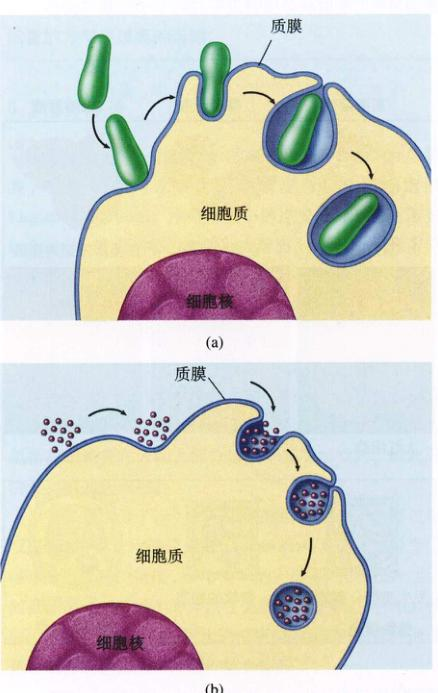
图 6.17 胞吞作用 吞噬作用 (a) 和胞饮作用 (b) 都是胞吞作用的形式。
Page 13 / 原始页码 111
细胞有3种主要的胞吞作用：吞噬作用 (phagocytosis)、胞饮作用 (pinocytosis) 和受体介导的胞吞作用 (receptor-mediated endocytosis)。
(1) 吞噬作用和胞饮作用：如果细胞摄取的物质是颗粒状的（由离散的微粒组成），如一个生物或有机体的一些碎片（图 6.17a），那么这个过程称为吞噬作用 (phagocytosis，希腊语 phagein 意为“吃”，cytosis 意为“细胞”)。如果细胞摄取的物质是液体（图 6.17b），称为胞饮作用 (pinocytosis，希腊语 pinein 意为“喝”)。动物细胞的胞饮作用很普遍，例如哺乳动物的卵细胞是由周围的细胞喂食的；正在发育的卵细胞通过胞饮作用摄取周围的细胞分泌出的营养物。事实上所有真核细胞都在不断地发生这种吞噬作用，捕捉微粒和细胞外液到小泡内，然后吸收它们。胞吞作用的速度因细胞类型的不同而有差异，某些类型的白细胞每小时可吸收相当于它们 25% 体积的物质。
(2) 受体介导的胞吞作用：一些特殊的分子常常通过受体介导的胞吞作用运入真核细胞，被运输的分子首先与质膜上特定的受体结合，运输的过程是特异性的，只有分子的形状刚好与受体匹配才能进行。某一类细胞质膜上存在一组特定受体类型，每个对应一种不同类型的分子。
受体分子的内部有部分与钩钩很像，陷在被网格蛋白覆盖的锯齿状的凹（或窝）里。这个窝就像一个小捕鼠器，当有合适的分子进入窝内它就封闭起来形成一个内泡（图 6.18），开启这个陷阱的开关是镶嵌在膜里的受体蛋白，这种蛋白质侦察特定目标分子的出现，进而启动胞吞作用。这个过程具有高度特异性，而且很快。
低密度脂蛋白 (LDL) 就是借助受体介导的胞吞作用而摄取的分子。LDL 分子把胆固醇带入细胞内，而胆固醇可以整合到膜里去，决定细胞膜的坚硬度起关键作用。在一种叫作高胆固醇血症 (hypercholesteremia) 的人类遗传病中，由于 LDL 的受体没有尾巴而无法固定在被网格蛋白覆盖的窝中，因此 LDL 也就不能被细胞摄取。结果过多的胆固醇在患者的血液中积累，覆盖其动脉血管而导致致心脏病。
液相的胞吞作用是受体介导的液体胞饮作用。胞吞作用并不仅仅把物质带入细胞质，所摄取的物质仍然被小泡的膜包裹而与细胞质分离，清楚这一点很重要。
2) 胞吐作用
胞吞作用的逆过程是胞吐作用 (exocytosis)，即在细胞表面从水泡里释放物质（图 6.19）。在植物细胞里，构造细胞壁所需的许多物质都是通过胞吐作用排出胞外的；在原生生物中，收缩泡的排出作用就是胞吐作用的一个形式；在动物细胞内，激素、神经递质、消化酶和其他物质的分泌机制都是胞吐作用。
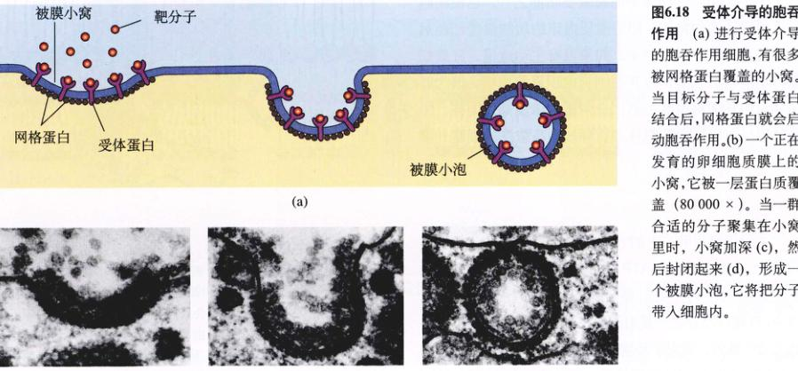
图 6.18 受体介导的胞吞作用 (a) 进行受体介导的胞吞作用细胞，有很多被网格蛋白覆盖的小窝。当目标分子与受体蛋白结合后，网格蛋白就会启动胞吞作用。(b) 一个正在发育的卵细胞质膜上的小窝，它被一层蛋白质覆盖 (80 000 ×)。当一群合适的分子聚集在小窝里时，小窝加深 (c)，然后封闭起来 (d)，形成一个被膜小泡，它将分子带入细胞内。
Page 14 / 原始页码 112

图 6.19 胞吐作用 (a) 蛋白质和其他分子包在称做小泡的“包裹”中，从细胞里分泌出去。小泡的膜与质膜融合，把里面的物质释放到细胞外。(b) 胞吐作用的透射电子显微镜照片。
6.5 跨膜主动运输由 ATP 提供能量
6.5.1 主动运输
扩散、易化扩散和渗透是物质顺着浓度梯度移动的被动运输过程，而细胞也可以逆着浓度梯度将物质运过膜。这是个耗能过程，一般是消耗 ATP，因此称为主动运输 (active transport)。和易化扩散一样，主动运输也需要膜内有高度选择性的蛋白质载体，这些载体将会与被运输的物质结合，它们可以是离子或简单分子，如糖、氨基酸和用于合成 DNA 的核苷酸等（图 6.20）。
主动运输是任何细胞的最重要功能之一，它使细胞可以摄取更多的物质，即使胞质内该物质的浓度已经远高于细胞外液。举个例子，如果没有主动运输，肝脏细胞将不能从血液里摄取并在细胞内积累葡萄糖，因为肝细胞里的糖浓度经常比血浆里的浓度高。同样，主动运输也可以帮助细胞将物质释放到高浓度的细胞外液中去。
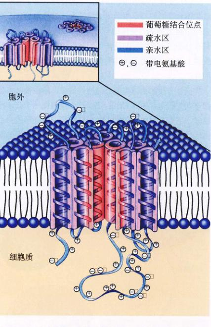
图 6.20 葡萄糖的转运载体 这种特别的葡萄糖转运载体的分子结构被研究得相当透彻。该蛋白质的 492 个氨基酸形成一个折叠的链，来回穿过脂双层 12 次。含有带电基团的氨基酸在脂双层的疏水区不稳定，因此会暴露在细胞质或细胞外液里。研究人员认为，蛋白质的中心由 5 个含有面向内侧的葡萄糖结合位点的螺旋片段组成（红色）。蛋白质的构象变化，转换了葡萄糖结合位点的位置，从而把葡萄糖运输过膜。
1) 钠钾泵
主动运输利用 ATP 的方式，可以是直接的，也可以是间接的。我们先来看看 ATP 是如何被直接用来逆着浓度梯度运送离子。一个不在旺盛分裂的动物细胞所消耗的 ATP 当中，有超过三分之一是用于钾离子 (K⁺) 和钠离子 (Na⁺) 的主动运输的。相对于环境而言，人体内物质均物细胞内部的 Na⁺ 浓度很低，而 K⁺ 浓度很高，细胞通过主动地泵出 Na⁺ 和泵入 K⁺，来维持这种浓度差异。运输这两种离子跨膜的“明星”蛋白质是钠钾泵 (sodium-potassium pump)（图 6.21），细胞从 ATP 取得能量来来驱动泵。
我们将会在第8章对 ATP 作更多的讨论。
Page 15 / 原始页码 113
钠钾泵运输的一个主要特征是它是一个主动运输的过程，把 Na⁺ 和 K⁺ 从低浓度区域运到高浓度区域，这种逆浓度梯度运输的方式与扩散的被动运输相反，必须不断消耗能量才能实现。钠钾泵通过跨膜蛋白一系列的构象变化来工作：
步骤 1：3 个钠离子结合在蛋白质细胞质的一侧，使蛋白质改变了它的构象。
步骤 2：在新构象下，蛋白质结合一个 ATP 分子，把它分解成腺苷二磷酸 (ADP) 和磷酸 (Pi)。ADP 被释放出来，而磷酸基团仍与蛋白质结合。这个蛋白质被磷酸化。
步骤 3：蛋白质的磷酸化引发了它第二次构象变化，这次变化使3个钠离子穿过膜，被转移到膜外的位置。在这个新构象下，蛋白质对 Na⁺ 只有很低的亲和力，因此，3个结合的 Na⁺ 就从蛋白质里释放出来，扩散到细胞外液去。
步骤 4：新的构象对 K⁺ 有很强的亲和力，因此，两个 K⁺ 就在释放 Na⁺ 的同时结合在蛋白质在细胞外的一侧上。
步骤 5：K⁺ 的结合导致蛋白质又一次构象变化，这次变化使结合在蛋白质上的磷酸基团释放出来。
步骤 6：释放了磷酸基团，蛋白质恢复原来的构象，两个 K⁺ 暴露在细胞质一侧。这种构象对 K⁺ 只有很低的亲和力，所以两个结合在蛋白质上的 K⁺ 解离出来，并扩散到细胞内部。而原来这种构象对 Na⁺ 有很强亲和力，当 Na⁺ 结合在上面时，又启动了另一次循环。
在每次循环里，3 个 Na⁺ 离开细胞，而两个 K⁺ 进入细胞。在循环过程中，蛋白质构象变化的速度是很快的，每个载体每秒可以运送 300 个 Na⁺。钠钾泵在动物细胞里无处不在，但在不同细胞含有钾泵的数量有很大差异。
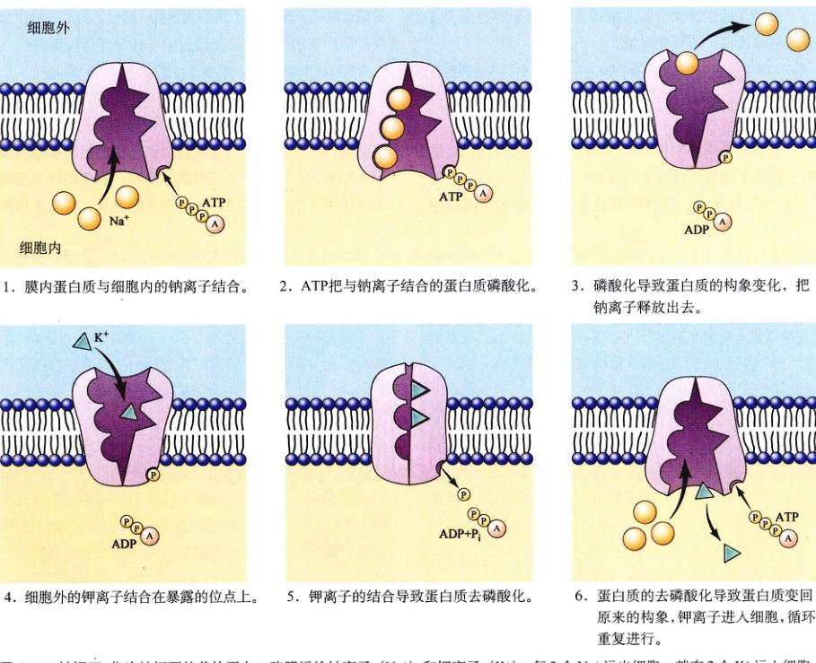
图 6.21 钠钾泵 作为钠钾泵的载体蛋白，跨膜运输钠离子 (Na⁺) 和钾离子 (K⁺)。每 3 个 Na⁺ 运出细胞，就有 2 个 K⁺ 运入细胞，钠钾泵是以 ATP 作为能源的。
Page 16 / 原始页码 114
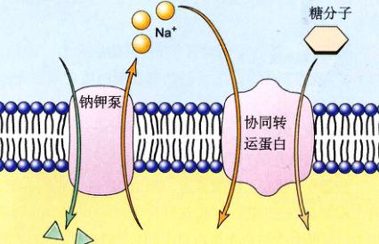
图 6.22 通过协同转运蛋白来协作协同运输 一个膜蛋白顺着其浓度梯度将钠离子运送入细胞内，同时把一个糖分子运入细胞。Na⁺ 的浓度梯度很大，可以提供足够的能量使糖分子逆着它们的浓度梯度进入细胞。
主动运输逆着物质的浓度梯度运送物质穿过膜。它使用载体蛋白，消耗化学能。
6.5.2 协同运输
很多分子间接利用 ATP，逆着浓度梯度运入细胞。钠离子或质子顺着浓度梯度运输时，这些分子与它们“手拉手”地移动，这种类型的主动运输称为协同运输 (cotransport)，它包含两个过程：
(1) 建立顺浓度梯度：ATP 用于建立钠离子或质子的顺浓度度梯度，这个梯度比被运输物质的逆向浓度梯度大。
(2) 逆浓度梯度：协同转运蛋白（也称为耦联转运蛋白）携带一个分子和一个钠离子或一个质子一起穿过膜。
因为钠离子或质子顺浓度的梯度大于被运输物质逆浓度的梯度，所以，穿过膜的净移动方向是顺着浓度梯度的方向，即指向细胞内。
1) 建立顺浓度梯度
由钠钾泵或质子泵建立的浓度梯度推动细胞内大部分主动运输过程。
(1) 钠钾泵：钠钾泵由 ATP 提供能量，把钠离子泵到细胞外，建立了胞内外的 Na⁺ 浓度梯度。
(2) 质子泵 (proton pump)：质子泵从富含能量的分子或光合作用中获得能量，把质子 (H⁺ 离子) 泵过膜，使膜一侧的质子浓度高于另一侧的浓度，从而建立了质子的浓度梯度。膜对质子是非渗透的，所以，质子按浓度梯度扩散回来的惟一方法是通过第二种协同转运蛋白。
2) 逆浓度梯度
动物细胞逆着浓度梯度积累很多的氨基酸和糖，即使细胞内这些分子的浓度较高，但它们仍然被从细胞外运入细胞内。这些分子与钠离子耦联，顺着钠钾泵形成钠离子的浓度梯度，一起进入细胞里。在这个协同运输的过程里，Na⁺ 和一种特定的糖或氨基酸同时结合在同一跨膜蛋白的细胞外一侧上，称共运输 (symport)（图 6.22）。虽然两者都转移进细胞内，但在这个过程里，Na⁺ 顺着它的浓度梯度移动，而糖或氨基酸则逆着浓度梯度移动。事实上，细胞利用储存在 Na⁺ 浓度梯度中的部分能量，来积累糖和氨基酸。
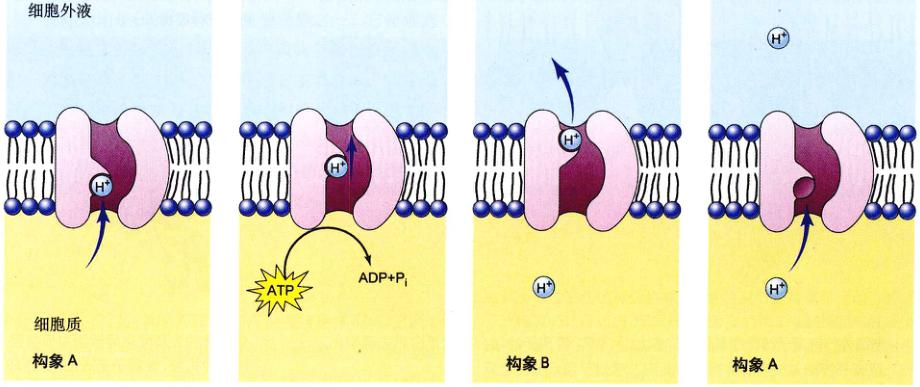
图 6.23 质子泵 在这个由能量驱动的普适离子泵模型里，作为质子泵的跨膜蛋白，通过两种构象 A 和 B 的循环变化来发挥作用。循环 A → B → A 单向进行，使质子从膜内泵到膜外。ATP 为泵提供能量。
Page 17 / 原始页码 115
表 6.2 跨膜运输的机制
| 跨膜过程 |
跨膜方式 |
作用机制 |
示 例 |
| 被动过程 |
| 扩散 |
直接的 |
分子的随机运动产生分子朝向低浓度区的净迁移 |
氧气进入细胞 |
|
蛋白质通道 |
极性分子从蛋白质通道通过 |
离子进出细胞 |
| 易化扩散 |
蛋白质载体 |
分子与膜上的载体蛋白结合后穿过膜，净移动朝向较低浓度区 |
葡萄糖进入细胞* |
| 渗透 |
直接的 |
水分子通过选择性渗透膜扩散 |
低浓度溶液中的水进入细胞 |
| 主动过程 |
| 胞吞作用 |
| 吞噬作用 |
膜泡 |
膜吞入微粒，将其包裹形成囊泡 |
白细胞捕捉细菌 |
| 胞饮作用 |
膜泡 |
膜吞入液体物质，将其包裹形成囊泡 |
“滋养”人的卵细胞 |
| 受体介导的胞吞作用 |
膜泡 |
由特定受体触发的胞吞作用 |
吸收胆固醇 |
| 胞吐作用 |
膜泡 |
小泡与质膜融合，排出内含物 |
分泌黏液 |
| 主动运输 |
| Na⁺/K⁺ 泵 |
蛋白质载体 |
载体消耗能量，逆浓度梯度输出 Na⁺/K⁺ |
伴随着浓度梯度吸收葡萄糖入细胞 |
| 质子泵 |
蛋白质载体 |
载体消耗能量，逆浓度梯度输出质子 |
化学渗透产生 ATP |
* 校者注：除小肠上皮细胞外。
在逆向运送 (countertransport) 的过程中，Na⁺ 的内流与其他物质（如 Ca²⁺ 或 H⁺）的外流相耦联。如同协同转运一样，Na⁺ 和其他物质都结合在相同的转运蛋白上，但分别位于膜的两侧，向相反的方向移动，这种情况称为逆向转运 (antiport)。在逆向运输过程中，细胞利用 Na⁺ 顺浓度梯度进入细胞内所释放出来的能量，把其他物质逆着浓度梯度排出去。
细胞利用质子泵造成的质子浓度梯度来生产 ATP（图 6.23），质子通过协同转运蛋白的运动，与生产 ATP 是耦联的，ATP 是前面提及的储能分子。这样，细胞消耗能量来合成 ATP，ATP 是一个方便的能量储存形式，它被用于很多生命活动。质子泵与 ATP 合成的耦联称为化学渗透 (chemiosmosis)，几乎所有生物（见第9章）和利用光合作用（见第10章）合成 ATP 的反应都利用这一机制。质子泵蛋白非常古老，因为无论细菌还是真核细胞都有质子泵。表 6.2 总结了跨膜的运输机制。
Page 18 / 原始页码 116
小 结
6.1 生物膜是流动的脂层
- 包裹细胞的是磷脂组成的双层质膜。
- 不饱和脂肪酸含量在磷脂双分子层中的增加将影响磷脂膜的流动性？
6.2 镶嵌在质膜上的蛋白质决定了膜的特性
- 镶嵌在质膜中的蛋白质将疏水部分埋于磷脂双分子层中，将亲水部分朝向膜的内外两侧。
- 膜蛋白能够完成细胞内外的物质运输，它们还在细胞识别和信息接收方面发挥作用。
6.3 被动运输是顺着浓度梯度进行的跨膜运输
- 扩散是物质的分子或离子顺浓度梯度运动的过程。
- 易化扩散也是物质顺浓度梯度进行的，但是蛋白质参与了辅助运输。
- 渗透是指水分子的扩散。由于生物体含有大量的水，维持渗透平衡对生命至关重要。
6.4 利用胞吞作用来运输大体积物质
- 大型物质进出细胞通常采取胞吞和胞吐的方式。
- 细胞需要消耗能量改变质膜的形状，以吞入 (胞吞) 或者吐出 (胞吐) 临时小泡。
6.5 跨膜主动运输由 ATP 提供能量
- 细胞直接或间接的消耗能量以完成逆浓度梯度的物质运输。这种主动运输能够够在细胞内积累物质或者将细胞内的物质运出胞外。
问 题
- 不饱和脂肪酸含量在磷脂双分子层中的增加将如何影响脂质膜的流动性？
- 描述两种主要跨膜蛋白的结构？
- 如果一个细胞的细胞质为高渗溶液，那么其溶质浓度比细胞外高还是低？
- 胞吞和胞饮何区别？
- 简述受体介导的胞吞作用？
- 易化扩散与一般的扩散作用有哪些不同？
- 主动运输与易化扩散有何区别？又有何相似之处？
媒体资源
- 质膜结构
- 实践活动：流动镶嵌模型
- 膜蛋白的多样性
- 扩散
- 渗透
- 技能测验：渗透压
- 胞吞和胞吐
- 胞吞和胞吐
- 大体积物质的进出细胞
- 探索：主动运输
- 主动运输